Before / After
We offer a mobile service restoring your headlights at home, work or other convenient place. Alternatively we can collect your vehicle, carry out the restoration and return it to you with bright sparkling headlights. Our technicians are fully insured for the work and to drive your vehicle if required.
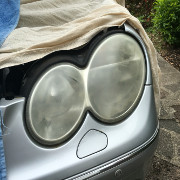
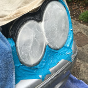
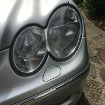
Restoration also provides a green element to the environment as no new headlights are required to be manufactured, therefore no old headlamps or packaging waste ends up in landfill sites.
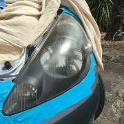
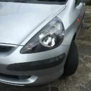
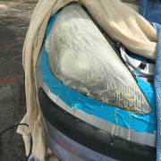
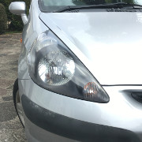
We use Delta systems (imported from the USA) to restore vehicle headlights, in our opinion probably the best restoration kit and process available.
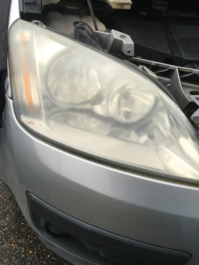
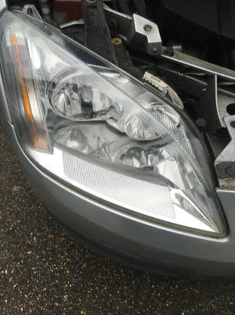
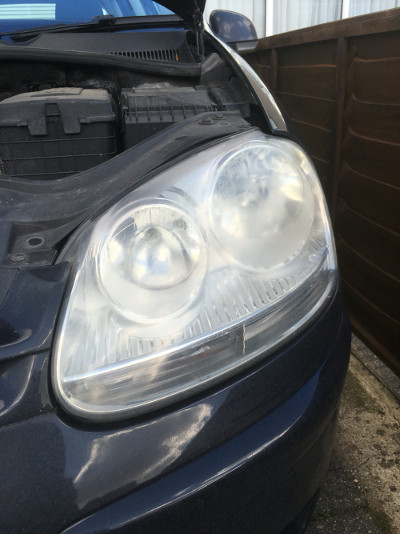
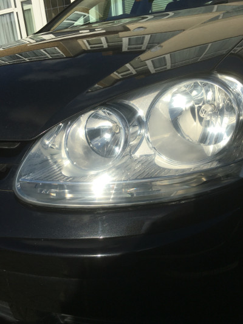